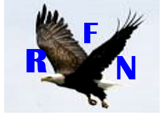
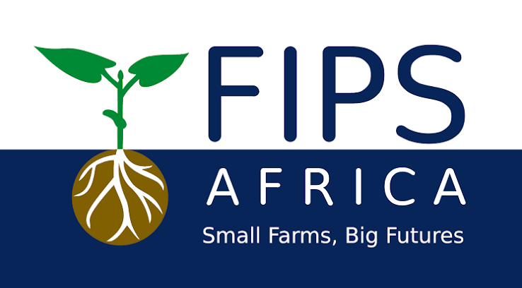
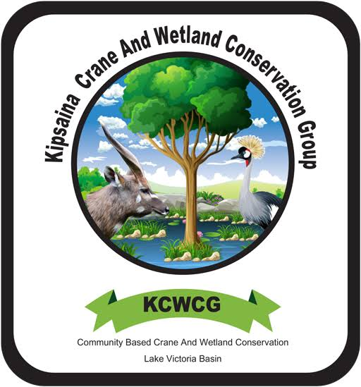
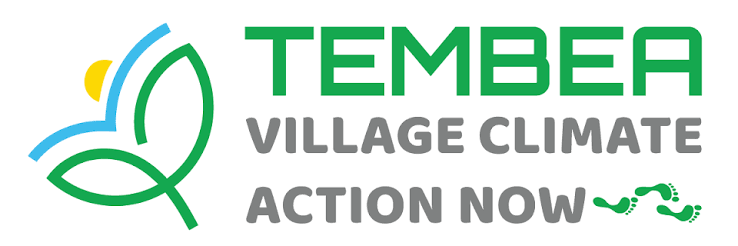

Kenya AE Hub - Farmer Trainings Dashboard
Baseline → Endline evaluation across five training days on Agroecology Practices

Baseline → Endline evaluation across five training days on Agroecology Practices






